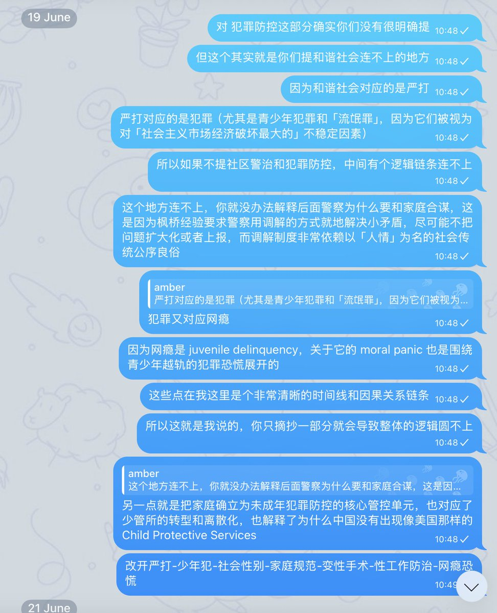

amber
@amber_medusozoa
@Nevernessian 对那咱思路一致的，你可以看下我这里追溯的这条思路，这是我前几天和另外两名演讲者交流的时候说的

魏淑淑淑芬芬芬
@Nevernessian
@amber_medusozoa 、由国家介入（或间接监管私营机构）为家庭提供资源支持而言，呈现出一种自由市场的倾向。换句话说，我想表达的不是从市场化转变成警治职能向家庭外包，而是在“警治职能向家庭外包”这个框架下，由自由市场向国家机器有目的施加高度监管的市场变化。